1.fdisk，fdisk -l:可以直接显示出系统内的所有partition。
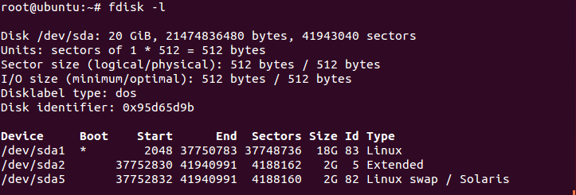
fdisk /dev/XdX (不加数字!)，进入到fdisk的操作界面
(1)m:帮助
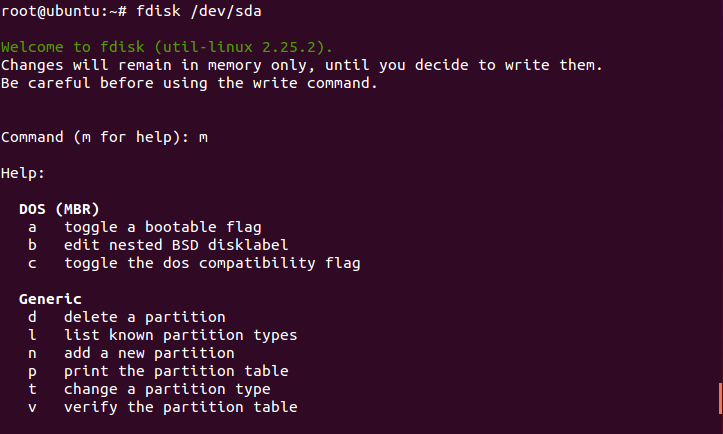
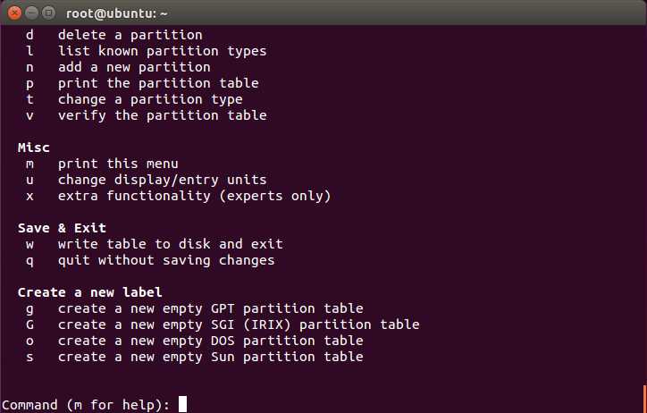
(2)w:将之前所有操作写入分区表,也就是正式生效!
(3)q:退出，注意:你直接q退出而没有用w写入生效的话,之前所有的操作是无效的！
(4)d:删除一个分区
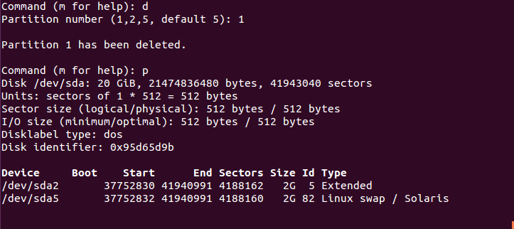
(5)n:新建一个分区，先把所有分区删掉 _(:3 」∠)_。
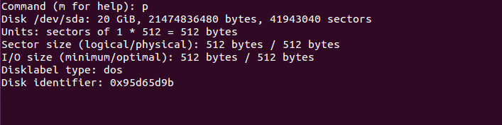
然后试试新建一个。
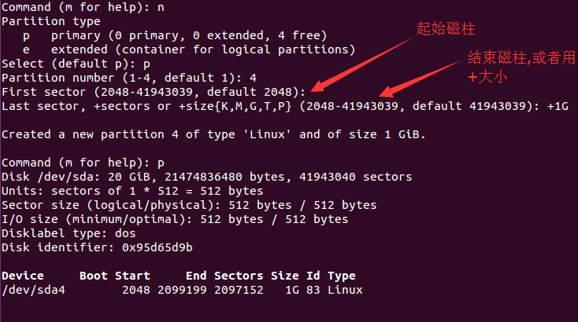
这里的last sector可以用磁柱数,但推荐用+大小(比如图里的+1G),默认是最后磁柱数，然后就建好了，但是,对于高于2TB的磁盘应该用parted,有兴趣的同学可以课后自己了解。
2.partprobe:让系统读取新的分区表
3.mkfs:简单的格式化工具
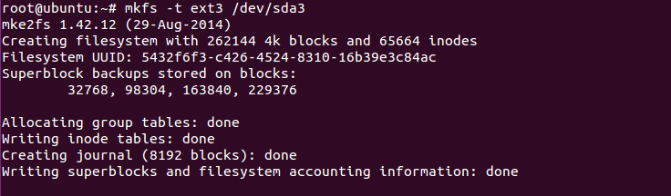
mkfs -t type 分区:type代表的文件系统类型
4.mke2fs:创建磁盘分区上的“etc2/etc3”文件系统 mke2fs [-b block大小] [-L 标头] [-cj] 装置 选项与参数： -b ：可以配置每个 block 的大小，目前支持 1024, 2048, 4096 bytes 三种 -c ：检查磁盘错误，仅下达一次 -c 时，会进行快速读取测试； 如果下达两次 -c -c 的话，会测试读写(read-write)，会很慢 -L ：后面可以接标头名称 (Label)，label可以理解成是分区或磁盘的别名 -j ：本来 mke2fs 是 EXT2 ，加上 -j 后，会主动加入 journal 而成为 EXT3 5.fsck(filesystem check):硬盘检查 fsck [-t 文件系统] [-Cay] 装置名称 选项与参数： -a ：自动修复检查到的有问题的扇区 -y ：与 -a 类似，但是某些filesystem仅支持 -y 这个参数 -C ：在检验的过程当中，使用一个直方图来显示目前的进度 EXT2/EXT3 的额外选项功能：(e2fsck 这支命令所提供) -f ：强制检查 -D ：针对文件系统下的目录进行优化配置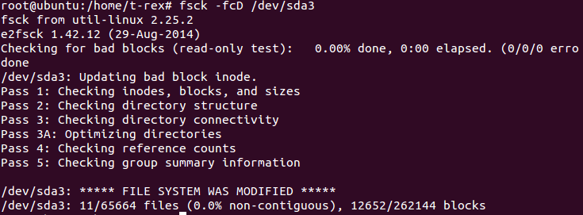
由于fsck在扫描硬盘的时候,可能会造成部分filesystem的损坏,所以运行fsck时,被检查的partition务必不可挂载到系统。
6.badblocks:硬盘检查 badblocks -[svw] 装置名称 选项与参数： -s ：在屏幕上列出进度 -v ：可以在屏幕上看到进度 -w ：使用写入的方式来测试，建议不要使用，尤其是待检查的装置已有文件时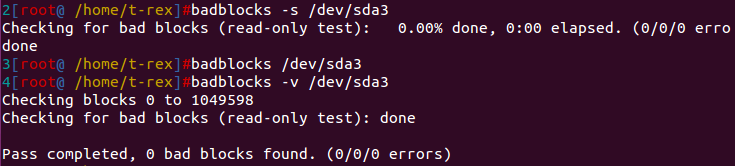
7.mount:挂载 mount [-l] mount [-L Label名] [-o 额外选项] 装置文件名 挂载点 选项与参数： -l ：单纯的输入 mount 会显示目前挂载的信息,加上-l可增列Label名称 -L ：系统除了利用装置文件名之外,还可以利用文件系统的标头名称(Label)来进行挂载 -o ：后面可以接一些挂载时额外加上的参数,比方说账号、密码、读写权限等： ro, rw: 挂载文件系统成为只读(ro) 或可擦写(rw) async, sync: 此文件系统是否使用同步写入 (sync) 或异步 (async) 的 内存机制，默认为 async auto, noauto: 允许此 partition 被以 mount -a 自动挂载(auto) dev, nodev: 是否允许此 partition 上，可创建装置文件？ dev 为可允许 suid, nosuid: 是否允许此 partition 含有 suid/sgid 的文件格式？ exec, noexec: 是否允许此 partition 上拥有可运行 binary 文件？ user, nouser: 是否允许此 partition 让任何使用者运行 mount ？一般来说， mount 仅有 root 可以进行，但下达 user 参数，则可让 一般 user 也能够对此 partition 进行 mount defaults: 默认值为：rw, suid, dev, exec, auto, nouser, and async remount: 重新挂载，通常用在系统出错，或重新升级参数时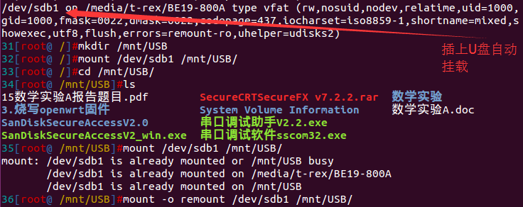
插上U盘自动挂载，我们在/mnt新建USB目录来把U盘再挂载，再执行一次，它会告诉它在这个目录已经被挂载了，于是加上重挂载remount试试,然后又挂载了一次……
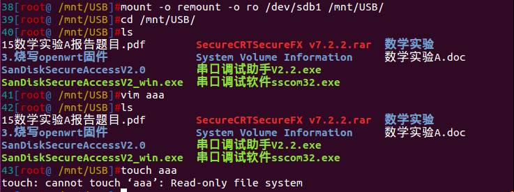
我们来把它挂成ro(只读)玩玩，然后发现没法新建文件。
8.unmount:卸除挂载文件 umount [-f] 装置文件名或挂载点 选项与参数： -f ：强制卸除